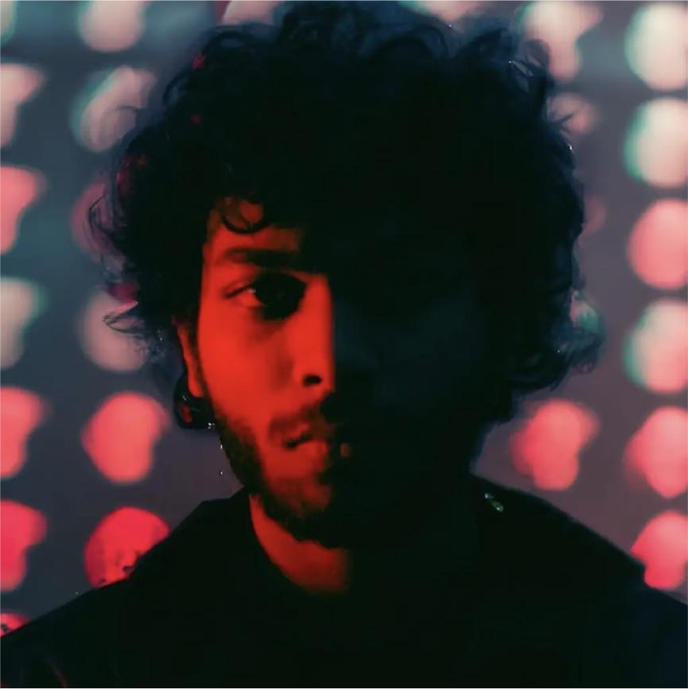

DIRECTED BY

Mashrukur Rahman Khan
Mashrukur Rahman Khan is an independent documentary filmmaker based in Dhaka, Bangladesh.
As Cyclone Remal rages on the coast of patuakhali, the villagers are pushed to the edge to survive through the storm.
DIRECTOR'S NOTE
As Cyclone Remal approached, we arrived in Debpur village in Dhankhali Upazila, Bangladesh, and were immediately struck by the stark contrast between the official warnings of impending devastation and the villagers' apparent lack of preparedness. Over the following days, amidst the unfolding chaos, we documented the lives of individuals grappling with the imminent threat of destruction.This film captures the overbearing anxiety that grips entire communities in the face of an approaching cyclone. Through intimate encounters and candid interviews, we witness firsthand the resilience and fear of those directly in Remal's path. Their voices echo the overwhelming power of nature and the human spirit in adversity.
Screening RegistrationMashrukur Rahman Khan is an independent documentary filmmaker based in Dhaka, Bangladesh.
Rifat Abrar Anik is a climate activist and filmmaker working on community resilience in Bangladesh.
Documentary Trailer Release followed by a Roundtable Discussion at an Event Titled "Growing Disasters with Extreme Heat" organised by Change Initiative in the presence of representatives from the Ministry of Disaster Management and Relief, Bangladesh Parliament.
04 June, 2024
Press Club, Dhaka
Closed Event
Documentary Screening followed by a panel discussion in the presence of relevant stakeholders about possible locally-led multi-lateral intervention with the presence of representatives from local communities.
23 June, 2024
2nd Floor (Drik Gallery), DrikPath Bhobon, Sukrabad Rd, Dhaka
07:00 PM (GMT +6)
Documentary Screening followed by a panel discussion in the presence of relevant stakeholders about possible locally-led multi-lateral intervention with the presence of representatives from local communities.
23 June, 2024
2nd Floor (Drik Gallery), DrikPath Bhobon, Sukrabad Rd, Dhaka
07:00 PM (GMT +6)